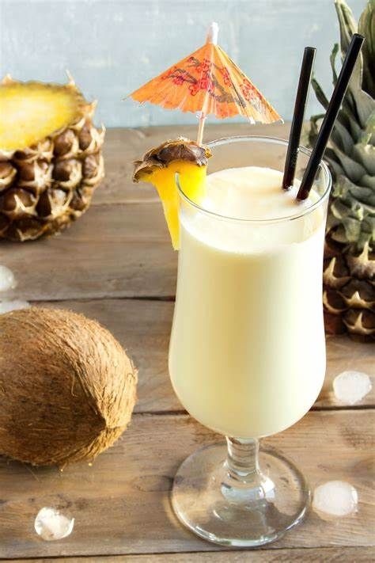
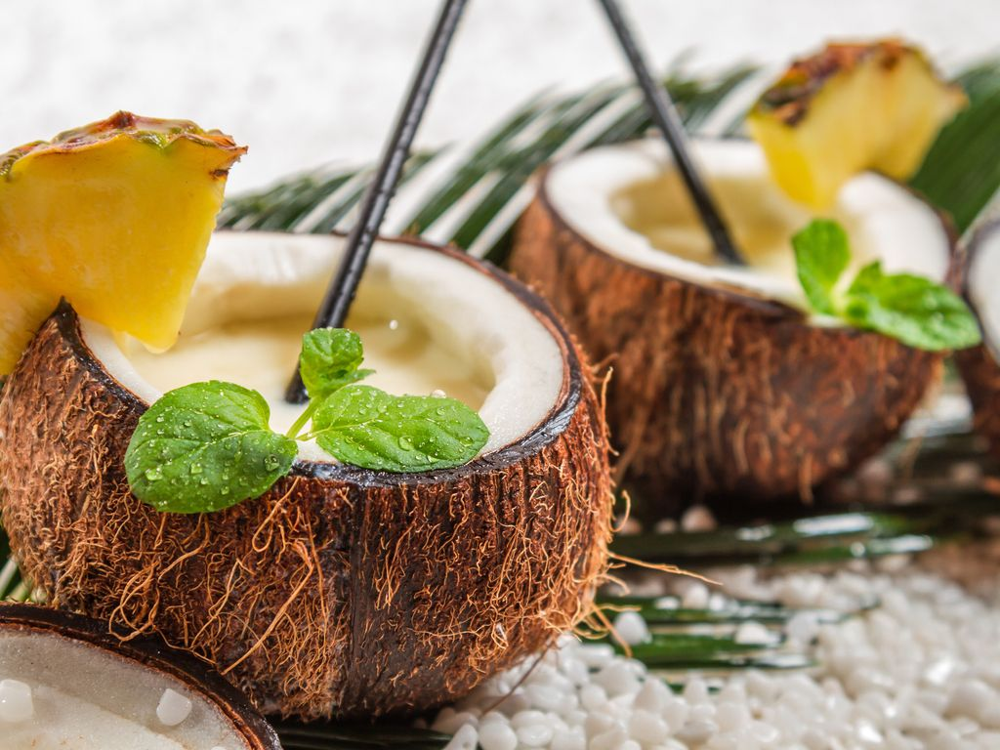

Présentation
Team
Contact
PINA COLADA
Pina Colada
Un super cocktail
Un cocktail avec de la coco et de l'ananas et une petite rondelle de citron

Ingrédients
Coco
Ananas
Rhum blanc
Rhum Ambré
Ingrédients supplémentaires ;)
Pour plus de fun
...
en savoir plus
Où se retrouver ?